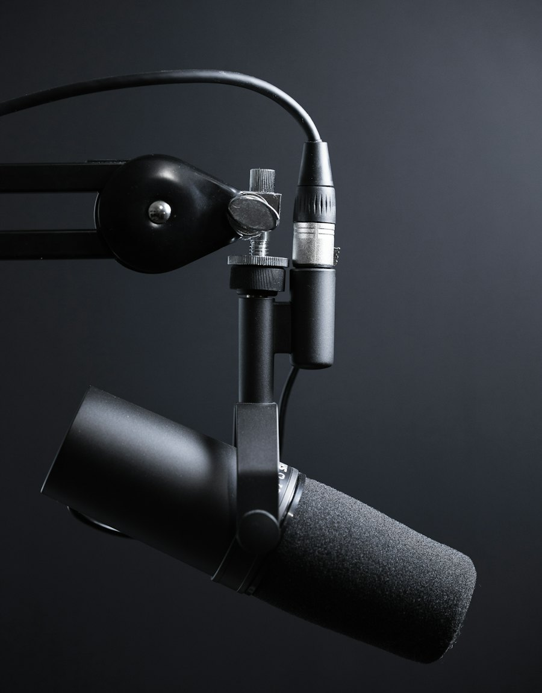
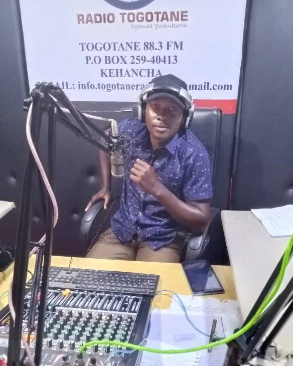

Local first
Kehancha, Migori County and the station's own voices lead the page, ahead of generic radio content.
The station
Radio Togotane 88.3 FM is a community radio station in Kehancha, Migori County, Kenya. This page sets out what the station publishes today and what this proposal still needs to confirm.

The station broadcasts on 88.3 FM from Kehancha. Its published weekday line-up runs from 05:00 to midnight, with two programmes on Saturday morning. The Sunday schedule has not yet been supplied.
Published programme times in East Africa Time (EAT). Sunday hours are pending confirmation.
Official channels
Radio Togotane publishes on Facebook, YouTube and X. These are the accounts linked from the station's own profiles, with their current handles.
Handles were checked against the station's Zeno profile, its YouTube channel and public radio directory listings. No official Instagram or TikTok account could be verified, so none is linked here.
The primary audience is the community in and around Kehancha, and listeners across Migori County. The station also serves Kenyans living in other regions and online listeners further afield, alongside local businesses and organisations looking to reach the community.
That mix shapes the website: local information comes first, programme details are quick to scan on a phone, and advertising enquiries are easy to start without a long form.

From the studio
A programme in progress in front of the station's banner. The photograph was published by Radio Togotane on its official Facebook page, and shows the desk, microphone and mixing equipment used on air.
Broadcast in progress at the station. Photograph published on the station's official Facebook page.
All presentersDesign principles
These are choices made for this proposal, not claims about the station's history.
Kehancha, Migori County and the station's own voices lead the page, ahead of generic radio content.
Programmes, times and presenters are presented plainly, with the published schedule separated from live status.
No frameworks, no trackers and locally hosted fonts and images, so pages stay usable on modest phones and connections.
Sunday programming, presenter photographs and events are marked as pending until the station confirms them.
About this proposal
This website was prepared as a redesign proposal for Radio Togotane 88.3 FM. The station's name, frequency, location, contact details, programmes and presenters come from the information supplied for the proposal.
Details that were not supplied are not guessed. They are either left out or clearly marked as pending, so station management can see exactly what is ready and what still needs confirmation.
Prepared by Thomas Hondo Chacha, software engineer.